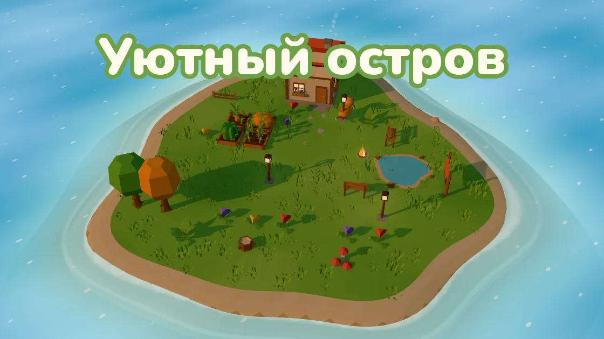
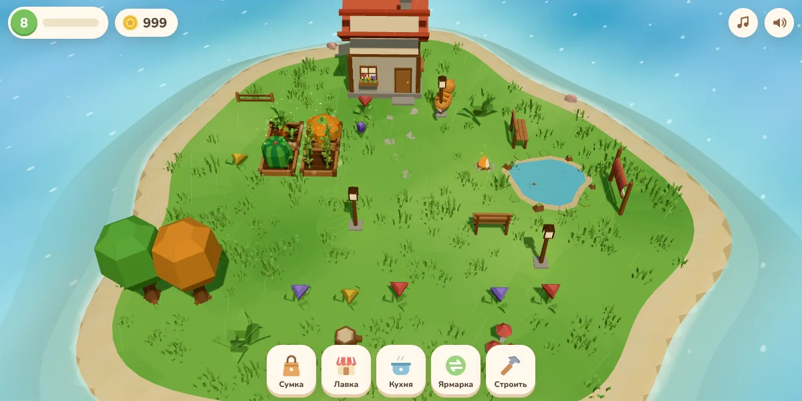
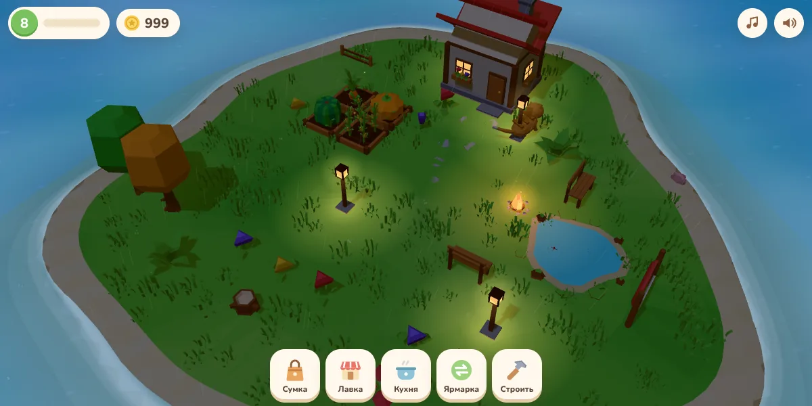
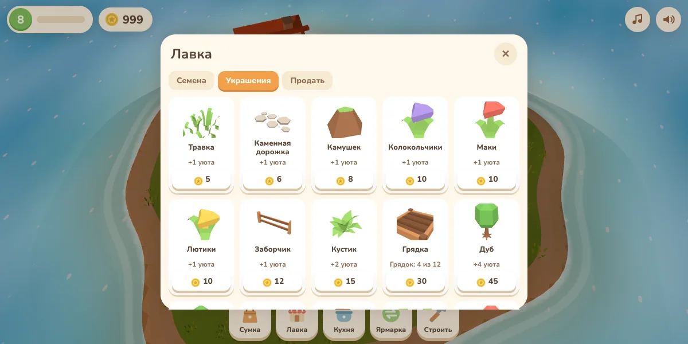

Уютный остров — уютная игра про огород и свой остров во ВКонтакте
Маленький остров посреди тёплого моря — и он весь ваш. Без спешки, таймеров-наказаний и проигрышей: сажайте, собирайте, украшайте и отдыхайте.

Об игре «Уютный остров»
«Уютный остров» — спокойная игра-огород для тех, кто хочет отдохнуть после дня. У вас есть небольшой остров с домиком, прудом и грядками. Посадите морковь или тыкву, полейте грядку — так урожай вырастет быстрее, — а потом соберите его. Растения ждут вас сколько угодно: зайти можно хоть через пять минут, хоть завтра.
Пока всё растёт, по острову гуляет котик: его можно погладить, а раз в день он приносит подарок. На берегу появляются ракушки и редкий жемчуг, под деревьями — грибы, на траве — цветы. Утро сменяется закатом и ночью: загораются окна домика, фонарики и костёр, летают светлячки. Иногда идёт дождик и сам поливает грядки, а после него встаёт радуга.

Что есть в игре
- Свой остров в мягком 3D: огород, домик, пруд и котик
- 10 растений, золотой урожай и коллекция находок
- Кухня: супы, хлеб, пироги, варенье, мятный чай
- Больше 40 украшений: фонарики, костёр, скамейки, деревья, гамак, колодец
- Остров можно расширять — море отступает, места становится больше
- Плавание на лодке: Лесной остров, Песчаная отмель и Зимний остров
- Ярмарка: обмен урожаем и находками с другими игроками и подарки друзьям
- Можно зайти в гости к соседу и полить ему грядки
- Смена дня и ночи, дождь, тихая музыка
- Без всплывающей рекламы

Острова, куда можно доплыть
С третьего уровня у пристани ждёт лодка. На Лесном острове растут ели, там собирают землянику, шишки и дикий мёд и находят семена клубники. На Песчаной отмели — пальмы, кокосы, морские звёзды и янтарь, а ещё семена ананаса. На Зимнем острове всё в снегу: морошка, ледяные кристаллы и семена морозной мяты.
Находки на островах появляются снова примерно раз в двадцать минут. Привезённые семена сажают дома, а из новых плодов на кухне готовят особые блюда — их охотно берут на ярмарке.

Как начать играть
- Нажмите «Играть во ВКонтакте» — игра откроется в приложении или браузере.
- Нажмите на грядку и посадите морковь — подсказки и стрелка покажут, что делать дальше.
- Продайте урожай в «Лавке», а на монеты украсьте остров через кнопку «Строить».
- Играйте на компьютере или телефоне: прогресс сохраняется в вашем аккаунте ВКонтакте.
Частые вопросы
Игра бесплатная?
Да. Реклама есть только по желанию: можно посмотреть ролик за награду, например чтобы урожай рос быстрее. Сама она игру не перекрывает.
Что будет, если долго не заходить?
Ничего плохого: растения не вянут, урожай дождётся вас, а на острове накопятся новые находки.
Как добавить новые грядки?
Нажмите «Строить» внизу экрана и выберите карточку «Грядка», затем нажмите на свободную клетку острова. С ростом уровня грядок можно ставить больше.
Как увеличить остров?
Со второго уровня в режиме «Строить» есть карточка «Расширить остров». Всего четыре расширения.
Можно играть с друзьями?
Да: на ярмарке можно обмениваться предметами, дарить подарки по коду друга и заходить в гости, чтобы полить соседу грядки.
На чём можно играть?
На компьютере в браузере и на телефоне — в приложении ВКонтакте или в мобильном браузере.